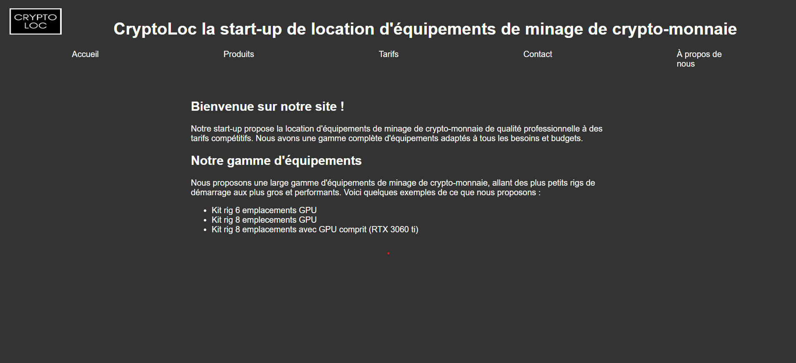

|
A propos de moi ---->
|
Bonjour, je m'appelle Joshuoy Martin j'ai 18 ans, je suis actuellement en 1ere année de but informatique au sein de l'iut de fontainebleau. Je souhaite me réorienter car malheureusement la formation proposé me correspond pas, je me vois mal travailler en tant que developper, c'est pour cela que je souhaite me réorienter en BUT MMI au sein de votre établissement. La formation MMI m'intérresent surtout celle que vous proposer par rapport au projet du premier semestre qui est la création d'une assosation sur les themes au quel j'affectionne et défends. Je suis aussi venu lors des portes ouvertes afin en découvrire d'avantage sur votre formation. Le BUT MMI m'intérésse aussi car il est tres versatile, il possede beaucoup de voie differente.
|
Mes projets
|
|
Jeu de paire en C
Le jeu de paires en C, lors de mon année en BUT informatique on eu comme SAé la création d'un jeu de paires en langage C, pour le créer on du utiliser la bibliothèque graphique de l'IUT afin de faire le coté graphique du jeu, si voulez en voir en plus voici le rapport de la SAé : ici.
|
Création d'une entreprise et d'un site
On a eu comme SAé la création d'une entreprise factice et de son site, on eu du faire le business angel et le business modèle de notre entreprise.
Notre s'appelle CrypoLoc c'est une entreprise de location de matériel permettant au particulier de miner de la cryptomonnaie chez eux. Pour
voir notre site cliquez ICI.
|

|
Mes compétence
Compétence informatique
Langage de programmation
Langage web
Langage de base de donnée
<
Compétence linguistique